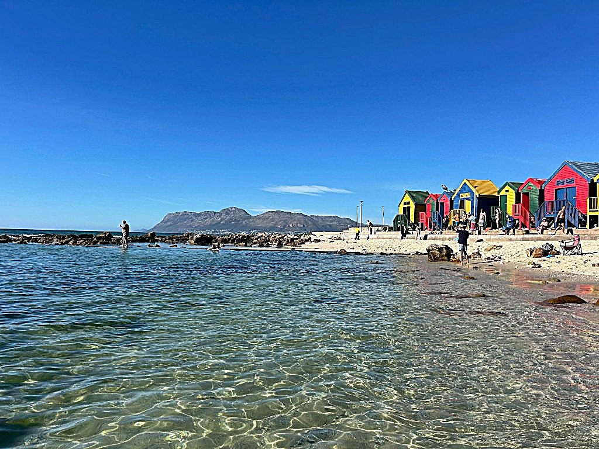
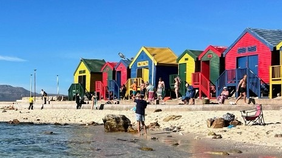
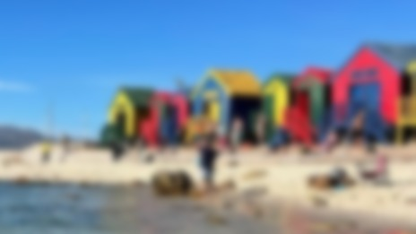
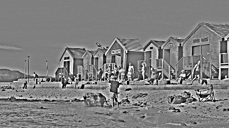
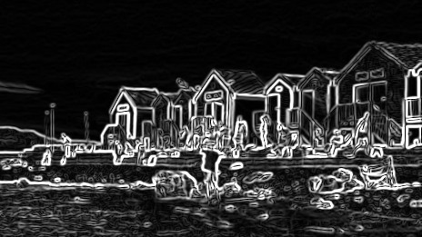
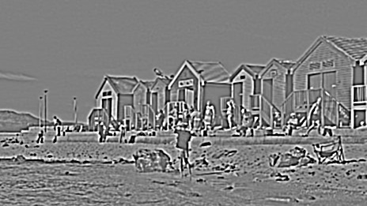
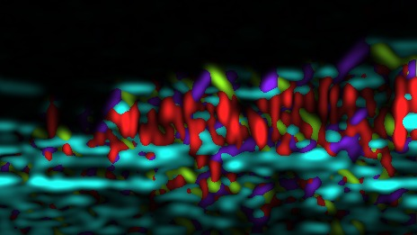
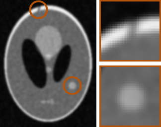
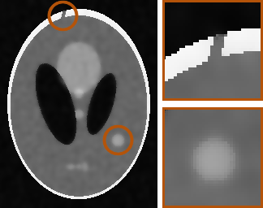

How do we change what we see?
Blur, Sharpen, and an edges view are three buttons on a phone, and three ideas. Blur replaces each pixel by an average of its neighbors. The ripples, the people, and the hut outlines fade. The sky, the sand, and the colors stay. Small, fast detail went. Large, slow structure stayed. Sharpen does the opposite: it amplifies detail that was already there. It does not invent information. Edges keep only the places where brightness changes fast.

The beach did not move, and no new photo was taken. A filter rewrites the pixel values we already have. It changes the representation, not the scene.
Today’s question. How can we manipulate an image to reveal, suppress, or extract particular visual information? Filtering is the first computation in almost every vision system, biological or artificial. The same operations sit inside denoising, image pyramids, Canny edges, SIFT and HOG, and the first layer of a CNN.
On this photo, the sky is slow variation, a low spatial frequency. The water is fast, repeated texture, a high spatial frequency. The huts are sharp vertical and horizontal boundaries. The people are small, a few pixels across, and the first thing a strong blur destroys. The horizon is a long edge with low contrast. What you keep depends on the task. Counting people needs the small, high-frequency structure. Estimating the weather could survive a heavy blur.



Two families organize the rest of the lecture. A low-pass filter keeps broad, gradual changes and removes fine detail. A band-pass filter keeps changes within a range of scales, and removes both the very broad and the very fine.
An image as a signal
A grayscale image is a function of position. I(x, y) is the brightness at column x and row y, one number per pixel, here from 0 to 255. Color is three such functions. A row through the sky barely moves. A row through the huts jumps at every wall. A row through the water oscillates quickly. Spatial frequency is how fast intensity changes as you move across the image.
One pixel is ambiguous. A value of 158 could be noise, a mid-gray wall, or the middle of an edge. Only its neighbors can tell. A local operation computes the new center value from a small window. The rule is a kernel: a table of weights, one per neighbor. Equal weights that sum to 1 replace the center by the average of the window.
A linear filter
The new pixel is a weighted sum of its neighbors, with the same weights at every position. The filter is linear: scaling or adding inputs scales or adds the outputs. It is shift-invariant: move the input and the output moves. Together, those two properties make the filter a convolution. A median filter is not linear. The median of a sum is not the sum of the medians.
Four kernels, one mechanism. Identity leaves the image alone. A box of equal weights blurs a little. A sharpening kernel is a large center minus its neighbors: flat regions stay put, edges overshoot. A Sobel kernel in x is negative on the left and positive on the right, so it is large where brightness increases to the right and zero on a flat region. The sum of the kernel is the gain on a flat region. Smoothing and sharpening keep the mean. Derivatives remove it.
Convolution
The output at (x, y) is the sum, over offsets i and j, of the kernel weight K(i, j) times the input at (x − i, y − j). The minus signs flip the kernel by 180 degrees. With the flip, convolution is commutative and associative, so filtering with K1 and then K2 equals filtering once with K1 convolved with K2. Without the flip, the operation is correlation. For a symmetric kernel, a box or a Gaussian, the two are the same. For a derivative, the sign of the output flips. Libraries such as PyTorch compute correlation and call it convolution. Learned kernels make the flip irrelevant.
At the edge of the photo the kernel hangs off the image. You can shrink the output, or pad. Zero padding pulls black in from outside and a derivative reports that as a fake edge around the frame. Copying the edge pixel, or mirroring, keeps the border looking like the image. This lecture uses mirror boundaries. Stride 2 halves the size. Without blurring first, that downsampling aliases. A K by K kernel costs K² multiplications per pixel. A separable kernel, an outer product of a column and a row, is a row pass then a column pass: 2K. The box, Gaussian, binomial, and Sobel kernels are separable.
Why frequency
An image is a weighted sum of gratings, each with a frequency, an orientation, and a weight. A linear filter cannot mix those gratings. It only scales each one. Split the photo into a blur and the difference, original minus blur. They add back to the photo. The blur holds the low frequencies. The difference holds the outlines, ripples, people, and noise. The Fourier transform of a convolution is the product of the Fourier transforms. In frequency, a filter is a gain for each grating. Near 1 at the center and falling to zero, it is low-pass. Zero at the center and peaking on a ring, it is band-pass.


Low-pass filters
A low-pass filter lets slow changes through and removes fast ones. The simplest is a box: every neighbor in the window gets the same weight, and the weights sum to 1. A wider box blurs more, and it can leave blocky artifacts because its frequency response rings.
A Gaussian weights the center most and falls off smoothly. Its width is σ. A larger σ keeps only slower structure. The Gaussian is the low-pass filter used for the comparisons in this lecture. Binomial filters, built by repeated smoothing with [1, 2, 1], approximate a Gaussian and are cheap. All of them throw away fine detail. That is the point when the detail is noise, and it is the failure when the detail is a person, a door, or a thin edge you needed.
Derivatives
A derivative asks where brightness changes. The first derivative in x is large on vertical edges and quiet on flat walls. The first derivative in y is large on horizontal edges. Together they are a gradient: a magnitude, how strong the change is, and an orientation, which way it points. Sobel filters estimate those derivatives with a little smoothing built in, so a single noisy pixel does not dominate.
The second derivative, the Laplacian, is positive on one side of an edge and negative on the other. The edge itself is the zero crossing between them. A raw derivative amplifies noise, because noise is high frequency and differentiation boosts high frequencies. The practical filter is a derivative of a Gaussian, or a Laplacian of a Gaussian: blur first, at a scale σ, then differentiate. That makes the derivative a band-pass filter. It removes the flat regions, the zero frequency, and it also removes detail finer than σ.
One filter is not a description of a scene. A bank of filters, at several orientations and several scales, is. Gabor filters are localized gratings: an oriented wave under a Gaussian envelope. A bank of them reports which orientations and frequencies are present in each patch. Difference of Gaussians does a similar job without a preferred orientation: it marks blobs and structure at one scale.



Derivatives have limits. Texture, shadows, and folds all produce strong gradients, so a white line in an edge map is not always an object boundary. A very faint edge can fall below the noise. And a derivative throws away absolute brightness: the inside of a wall is zero, whatever color the wall was.
Does the visual system filter images?
Retinal ganglion cells have center-surround receptive fields. They pool a patch of photoreceptors, not one, and they fire for a difference between the center and the surround. A uniform wall is quiet. A boundary is loud. A difference of Gaussians is the engineer’s version of that field: one Gaussian minus a wider one.
In V1, Hubel and Wiesel found cells that prefer a bar at one orientation. A Gabor filter is a compact model of that preference: a particular orientation, a particular spatial frequency, and a limited region of the image. The visual system does not run one of these filters. It runs many, across scales and orientations, and later stages combine them. The first layer of a convolutional network learns filters that look like this.
Choosing a filter
- Noise. Gaussian smoothing. Noise is mostly high frequency. Use the largest σ that still leaves the smallest structure you need. Lost: fine detail.
- Fine detail. Unsharp masking adds back a scaled copy of image minus blur. It emphasizes changes that were already there. Noise gets louder, and strong edges grow halos.
- Boundaries. Sobel or Gaussian derivatives, then magnitude. Lost: flat regions, absolute brightness, and texture edges you did not want.
- Blobs at one scale. Difference of Gaussians. Lost: orientation, and everything outside the band.
- Orientation and texture. A Gabor bank. Lost, if you keep only the energy: the exact phase and position. You also pay for many filters.
There is no best filter. There is a best filter for a question. Every filter on that list throws something away.
When a linear filter is not enough
A linear filter blurs across an edge as readily as across a flat region, because its weights ignore the image. A bilateral filter averages only over neighbors that are close in space and similar in brightness. Inside a flat region it smooths. Across an edge the pixels on the other side get almost no weight, so the edge survives. The weights depend on the image, so it is not a convolution and it has no single frequency response.
Two cases make the difference concrete. In a noisy CT, the diagnostic information is often at an edge: the margin of a lesion, the line of a fracture. A Gaussian quiets the noise and softens those edges. An edge-preserving filter keeps them. A very faint structure close to the noise can still be smoothed away. In a dashcam at dusk, a speed-limit sign is only a few dozen pixels across. A Gaussian blurs the digits into each other. An edge-preserving filter keeps the strokes. In both cases a linear filter cannot tell noise from fine detail, because both are high frequency.


Back to the photograph, then the lab
No single filter output looks like what we see. Low-pass keeps layout and color, and loses the people. Derivatives keep boundaries and their direction, and lose the color of the walls. Difference of Gaussians keeps blobs at one scale. Gabor energy keeps orientation. The visual system runs many of these in parallel. So does the first layer of a CNN. Which of them you would hand to a system depends on the question: finding the people is not the same job as deciding whether it is a sunny day.
The lab for this lecture is Image filtering, in Colab. You pick a photo and build a trifold name tag from filtered versions of it: spatial filters, a filter bank, and a pyramid. Change only the lines marked EDIT.
Homework is both labs: Part 1, metamers, and Part 2, this filtering notebook. The project proposal is due Friday night, through the form on the course page.